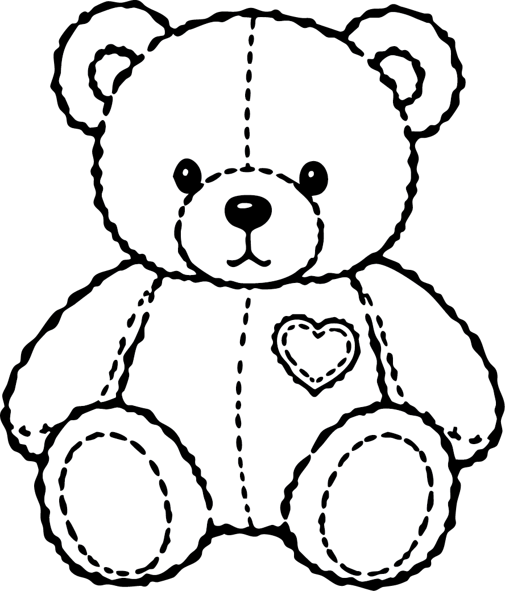

before
Build-A-Fear
A Reading Study
nothing scary yet

before anything is added
Do teddy bears normally scare you?
Answer honestly.
Then let’s see what it takes.

before anything is added
Answer honestly.
Then let’s see what it takes.